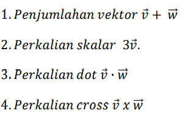
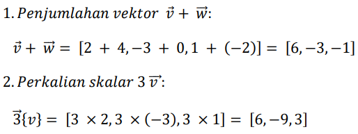
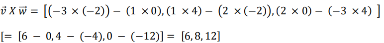
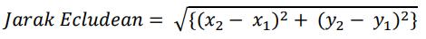

Operasi vektor adalah serangkaian operasi matematika yang diterapkan pada vektor.
Berikut adalah beberapa operasi vektor yang umum:
𝑃𝑒𝑛𝑗𝑢𝑚𝑙𝑎ℎ𝑎𝑛 𝑣𝑒𝑘𝑡𝑜𝑟 𝑚𝑒𝑙𝑖𝑏𝑎𝑡𝑘𝑎𝑛 𝑝𝑒𝑛𝑎𝑚𝑏𝑎ℎ𝑎𝑛 𝑘𝑜𝑚𝑝𝑜𝑛𝑒𝑛 𝑣𝑒𝑘𝑡𝑜𝑟 𝑦𝑎𝑛𝑔 𝑠𝑒𝑠𝑢𝑎𝑖.
𝑀𝑖𝑠𝑎𝑙𝑛𝑦𝑎,𝑗𝑖𝑘𝑎 𝑉⃗ = [𝑣1, 𝑣2, 𝑣3] 𝑑𝑎𝑛 𝑊⃗ = [𝑤1, 𝑤2, 𝑤3],
𝑚𝑎𝑘𝑎 𝑝𝑒𝑛𝑗𝑢𝑚𝑙𝑎ℎ𝑎𝑛 𝑣𝑒𝑘𝑡𝑜𝑟 𝑉⃗ + 𝑊⃗ 𝑎𝑑𝑎𝑙𝑎ℎ [𝑣1 + 𝑤1, 𝑣2 + 𝑤2, 𝑣3 + 𝑤3].
𝑃𝑒𝑛𝑔𝑢𝑟𝑎𝑛𝑔𝑎𝑛 𝑣𝑒𝑘𝑡𝑜𝑟 𝑚𝑖𝑟𝑖𝑝 𝑑𝑒𝑛𝑔𝑎𝑛 𝑝𝑒𝑛𝑗𝑢𝑚𝑙𝑎ℎ𝑎𝑛 𝑣𝑒𝑘𝑡𝑜𝑟,𝑡𝑒𝑡𝑎𝑝𝑖 𝑚𝑒𝑛𝑔𝑢𝑟𝑎𝑛𝑔𝑘𝑎𝑛 𝑘𝑜𝑚𝑝𝑜𝑛𝑒𝑛 𝑣𝑒𝑘𝑡𝑜𝑟 𝑦𝑎𝑛𝑔 𝑠𝑒𝑠𝑢𝑎𝑖.
𝑀𝑖𝑠𝑎𝑙𝑛𝑦𝑎,𝑗𝑖𝑘𝑎 𝑣 = [𝑣1, 𝑣2, 𝑣3] 𝑑𝑎𝑛 𝑊⃗ = [𝑤1, 𝑤2, 𝑤3],
𝑚𝑎𝑘𝑎 𝑝𝑒𝑛𝑔𝑢𝑟𝑎𝑛𝑔𝑎𝑛 𝑣𝑒𝑘𝑡𝑜𝑟 𝑣 − 𝑤⃗ 𝑎𝑑𝑎𝑙𝑎ℎ [𝑣1 − 𝑤1, 𝑣2 − 𝑤2, 𝑣3 − 𝑤3].
𝑃𝑒𝑟𝑘𝑎𝑙𝑖𝑎𝑛 𝑠𝑘𝑎𝑙𝑎𝑟 𝑚𝑒𝑙𝑖𝑏𝑎𝑡𝑘𝑎𝑛 𝑚𝑒𝑛𝑔𝑎𝑙𝑖𝑘𝑎𝑛 𝑠𝑒𝑡𝑖𝑎𝑝 𝑘𝑜𝑚𝑝𝑜𝑛𝑒𝑛 𝑣𝑒𝑘𝑡𝑜𝑟 𝑑𝑒𝑛𝑔𝑎𝑛 𝑠𝑘𝑎𝑙𝑎𝑟.
𝑀𝑖𝑠𝑎𝑙𝑛𝑦𝑎,𝑗𝑖𝑘𝑎 𝑣 = [𝑣1, 𝑣2, 𝑣3] 𝑑𝑎𝑛 𝑐 𝑎𝑑𝑎𝑙𝑎ℎ 𝑠𝑘𝑎𝑙𝑎𝑟,
𝑚𝑎𝑘𝑎 𝑝𝑒𝑟𝑘𝑎𝑙𝑖𝑎𝑛 𝑠𝑘𝑎𝑙𝑎𝑟 𝑐 𝑣 𝑎𝑑𝑎𝑙𝑎ℎ [𝑐 𝑣1, 𝑐 𝑣2, 𝑐 𝑣3].
𝐼𝑛𝑖 𝑑𝑖𝑙𝑎𝑘𝑢𝑘𝑎𝑛 𝑑𝑒𝑛𝑔𝑎𝑛 𝑚𝑒𝑛𝑔𝑎𝑙𝑖𝑘𝑎𝑛 𝑠𝑒𝑡𝑖𝑎𝑝 𝑘𝑜𝑚𝑝𝑜𝑛𝑒𝑛 𝑦𝑎𝑛𝑔 𝑠𝑒𝑠𝑢𝑎𝑖 𝑑𝑎𝑟𝑖 𝑑𝑢𝑎 𝑣𝑒𝑘𝑡𝑜𝑟 𝑑𝑎𝑛 𝑘𝑒𝑚𝑢𝑑𝑖𝑎𝑛 𝑚𝑒𝑛𝑗𝑢𝑚𝑙𝑎ℎ𝑘𝑎𝑛𝑛𝑦𝑎.
𝑀𝑖𝑠𝑎𝑙𝑛𝑦𝑎,𝑗𝑖𝑘𝑎 ( 𝑣 [𝑣1, 𝑣2, 𝑣3] 𝑑𝑎𝑛 𝑤⃗ [𝑤1, 𝑤2, 𝑤3]), 𝑚𝑎𝑘𝑎 𝑝𝑒𝑟𝑘𝑎𝑙𝑖𝑎𝑛 𝑑𝑜𝑡 𝑑𝑎𝑟𝑖 𝑣⃗ 𝑑𝑎𝑛 𝑤⃗ 𝑎𝑑𝑎𝑙𝑎ℎ ( 𝑣1𝑤1 + 𝑣2𝑤2 𝑣3𝑤3).
𝑑𝑎𝑛 𝑚𝑒𝑛𝑔ℎ𝑎𝑠𝑖𝑙𝑘𝑎𝑛 𝑣𝑒𝑘𝑡𝑜𝑟 𝑙𝑎𝑖𝑛 𝑦𝑎𝑛𝑔 𝑡𝑒𝑔𝑎𝑘 𝑙𝑢𝑟𝑢𝑠 𝑡𝑒𝑟ℎ𝑎𝑑𝑎𝑝 𝑘𝑒𝑑𝑢𝑎 𝑣𝑒𝑘𝑡𝑜𝑟 𝑎𝑠𝑎𝑙. 𝑀𝑖𝑠𝑎𝑙𝑛𝑦𝑎,𝑗𝑖𝑘𝑎 𝑣 = [𝑣1, 𝑣2, 𝑣3] 𝑑𝑎𝑛 𝑤⃗ = [𝑤1, 𝑤2, 𝑤3], 𝑚𝑎𝑘𝑎 𝑝𝑒𝑟𝑘𝑎𝑙𝑖𝑎𝑛 𝑐𝑟𝑜𝑠𝑠 𝑑𝑎𝑟𝑖 𝑣 𝑑𝑎𝑛 𝑤⃗ 𝑎𝑑𝑎𝑙𝑎ℎ
[𝑣2𝑤3 − 𝑣3𝑤2, 𝑣3𝑤1 − 𝑣1𝑤3, 𝑣1𝑤2 − 𝑣2𝑤1].
𝑃𝑟𝑜𝑦𝑒𝑘𝑠𝑖 𝑣𝑒𝑘𝑡𝑜𝑟 𝑣 𝑘𝑒 𝑎𝑟𝑎ℎ 𝑣𝑒𝑘𝑡𝑜𝑟 𝑤⃗ 𝑚𝑒𝑛𝑔ℎ𝑎𝑠𝑖𝑙𝑘𝑎𝑛 𝑣𝑒𝑘𝑡𝑜𝑟 𝑏𝑎𝑟𝑢 𝑦𝑎𝑛𝑔 𝑚𝑒𝑟𝑢𝑝𝑎𝑘𝑎𝑛 𝑠𝑒𝑏𝑎𝑔𝑖𝑎𝑛 𝑑𝑎𝑟𝑖 𝑣 𝑑𝑎𝑙𝑎𝑚 𝑎𝑟𝑎ℎ 𝑤⃗ .
: 𝑉𝑒𝑘𝑡𝑜𝑟 𝑣 𝑑𝑎𝑛 𝑤⃗ 𝑑𝑖𝑘𝑎𝑡𝑎𝑘𝑎𝑛 𝑜𝑟𝑡ℎ𝑜𝑔𝑜𝑛𝑎𝑙 𝑗𝑖𝑘𝑎 𝑝𝑒𝑟𝑘𝑎𝑙𝑖𝑎𝑛 𝑑𝑜𝑡 𝑚𝑒𝑟𝑒𝑘𝑎 𝑠𝑎𝑚𝑎 𝑑𝑒𝑛𝑔𝑎𝑛 𝑛𝑜𝑙, 𝑦𝑎𝑖𝑡𝑢 𝑣 ⋅ 𝑤⃗ = 0 .𝐼𝑛𝑖 𝑏𝑒𝑟𝑎𝑟𝑡𝑖 𝑘𝑒𝑑𝑢𝑎 𝑣𝑒𝑘𝑡𝑜𝑟 𝑡𝑒𝑟𝑠𝑒𝑏𝑢𝑡 𝑡𝑒𝑔𝑎𝑘 𝑙𝑢𝑟𝑢𝑠 𝑠𝑎𝑡𝑢 𝑠𝑎𝑚𝑎 𝑙𝑎𝑖𝑛.
𝑉𝑒𝑘𝑡𝑜𝑟 𝑑𝑒𝑛𝑔𝑎𝑛 𝑝𝑎𝑛𝑗𝑎𝑛𝑔 𝑠𝑎𝑡𝑢, 𝑦𝑎𝑛𝑔 𝑑𝑖𝑔𝑢𝑛𝑎𝑘𝑎𝑛 𝑢𝑛𝑡𝑢𝑘 𝑚𝑒𝑛𝑢𝑛𝑗𝑢𝑘𝑘𝑎𝑛 𝑎𝑟𝑎ℎ 𝑡𝑎𝑛𝑝𝑎 𝑚𝑒𝑚𝑝𝑒𝑟ℎ𝑖𝑡𝑢𝑛𝑔𝑘𝑎𝑛 𝑚𝑎𝑔𝑛𝑖𝑡𝑢𝑑𝑜.
Hitunglah:
Penyelesaian:
3. 𝑃𝑒𝑟𝑘𝑎𝑙𝑖𝑎𝑛 𝑑𝑜𝑡 𝑣 . 𝑤⃗ :

4. 𝑃𝑒𝑟𝑘𝑎𝑙𝑖𝑎𝑛 𝑐𝑟𝑜𝑠s 𝑉⃗ . 𝑤⃗
𝐽𝑎𝑑𝑖, ℎ𝑎𝑠𝑖𝑙 𝑜𝑝𝑒𝑟𝑎𝑠𝑖 𝑢𝑛𝑡𝑢𝑘 𝑣𝑒𝑘𝑡𝑜𝑟 ( 𝑉⃗ 𝑑𝑎𝑛 ( 𝑊⃗ 𝑠𝑒𝑠𝑢𝑎𝑖 𝑢𝑟𝑢𝑡𝑎𝑛 𝑎𝑑𝑎𝑙𝑎ℎ:
1. 𝑃𝑒𝑛𝑗𝑢𝑚𝑙𝑎ℎ𝑎𝑛 𝑣𝑒𝑘𝑡𝑜𝑟: [6, −3, −1]
2. 𝑃𝑒𝑟𝑘𝑎𝑙𝑖𝑎𝑛 𝑠𝑘𝑎𝑙𝑎𝑟: [6, −9, 3]
3. 𝑃𝑒𝑟𝑘𝑎𝑙𝑖𝑎𝑛 𝑑𝑜𝑡: 6
4. 𝑃𝑒𝑟𝑘𝑎𝑙𝑖𝑎𝑛 𝑐𝑟𝑜𝑠𝑠: ([6, 8, 12]
Untuk menghitung jarak Euclidean antara dua titik dalam ruang dua dimensi, Anda dapat menggunakan rumus berikut:
𝐷𝑖 𝑠𝑖𝑛𝑖, (𝑥1, 𝑦1) 𝑎𝑑𝑎𝑙𝑎ℎ 𝑘𝑜𝑜𝑟𝑑𝑖𝑛𝑎𝑡 𝑡𝑖𝑡𝑖𝑘 𝑝𝑒𝑟𝑡𝑎𝑚𝑎, 𝑑𝑎𝑛 (𝑥2, 𝑦2) 𝑎𝑑𝑎𝑙𝑎ℎ 𝑘𝑜𝑜𝑟𝑑𝑖𝑛𝑎𝑡 𝑡𝑖𝑡𝑖𝑘 𝑘𝑒𝑑𝑢𝑎.
𝑀𝑖𝑠𝑎𝑙𝑛𝑦𝑎,𝑗𝑖𝑘𝑎 𝐴𝑛𝑑𝑎 𝑚𝑒𝑚𝑖𝑙𝑖𝑘𝑖 𝑑𝑢𝑎 𝑡𝑖𝑡𝑖𝑘 (𝐴(3, 4) 𝑑𝑎𝑛 𝐵(7, 1),
𝐴𝑛𝑑𝑎 𝑑𝑎𝑝𝑎𝑡 𝑚𝑒𝑛𝑔ℎ𝑖𝑡𝑢𝑛𝑔 𝑗𝑎𝑟𝑎𝑘 𝐸𝑢𝑐𝑙𝑖𝑑𝑒𝑎𝑛 𝑎𝑛𝑡𝑎𝑟𝑎 𝑘𝑒𝑑𝑢𝑎 𝑡𝑖𝑡𝑖𝑘 𝑡𝑒𝑟𝑠𝑒𝑏𝑢𝑡 𝑠𝑒𝑏𝑎𝑔𝑎𝑖 𝑏𝑒𝑟𝑖𝑘𝑢𝑡:
𝐽𝑎𝑑𝑖,𝑗𝑎𝑟𝑎𝑘 𝐸𝑢𝑐𝑙𝑖𝑑𝑒𝑎𝑛 𝑎𝑛𝑡𝑎𝑟𝑎 𝑡𝑖𝑡𝑖𝑘 ( 𝐴(3, 4)) 𝑑𝑎𝑛 ( 𝐵(7, 1)) 𝑎𝑑𝑎𝑙𝑎ℎ 5 𝑠𝑎𝑡𝑢𝑎n
Output dari kode di atas adalah:
Jarak Euclidean antara titik A dan B adalah: 5.0
Dalam kode di atas, fungsi `euclidean_distance` menerima dua argumen `point1` dan `point2`, yang masing-masing adalah tupel yang berisi koordinat x dan y dari titik. Fungsi ini kemudian menghitung jarak Euclidean antara dua titik tersebut menggunakan rumus yang telah dijelaskan sebelumnya, dan mengembalikan jaraknya.